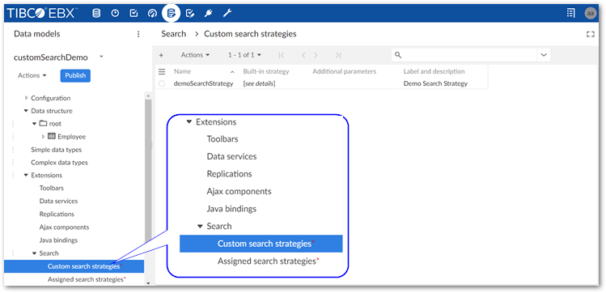
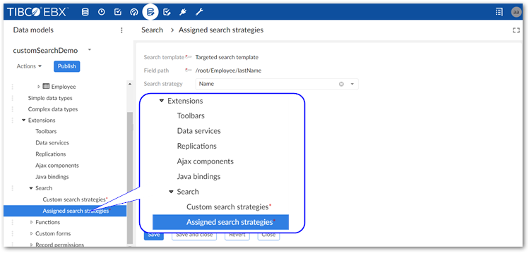
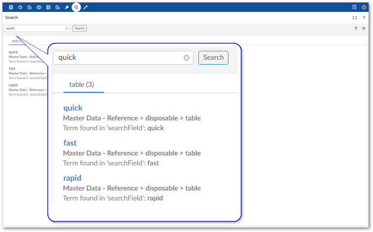

Since the 6.0.0 release of EBX, some search functionality is no longer handled by the add-on, or available to configure. However, you can programatically extend search functionality for targeted searches so that they use custom templates and include synonyms and stopwords. You can accomplish this by:
A custom search template must implement the SearchTemplate interface. This interface enables definition of a template key, description, and label. As shown in the example below, the KEY field must include the name of your custom module followed by @<unique String>. See the EBX API documentation for details on this interface.
The following is an example of a SearchTemplate:
/**
*/
public class MyCustomTemplate implements SearchTemplate
{
//The key must begin with the name of the custom module where you want to register this template followed by '@' and any value.
private final static SearchTemplateKey KEY = SearchTemplateKey
.parse("ebx-addon-docs@docsSearchTemplateExample");
@Override
public SearchTemplateKey getTemplateKey()
{
return KEY;
}
//Sets the label that identifies this template. This label displays in the menu that allows you to choose a search template.
@Override
public UserMessage getUserLabel()
{
return UserMessage.createInfo("My Custom Template");
}
@Override
public UserMessage getUserDescription()
{
return UserMessage.createInfo("Template used for synonyms and stopwords demo.");
}
}
To make synonyms and stopwords available these lists must be included in your custom module registration by overriding the handleSearchRegistration() method in your module's registration servlet. The following example shows registration of basic lists:
@Override
public void handleSearchRegistration(ModuleSearchRegistrationContext aContext)
{
ModuleSearchRegistrationAddonContext context = (ModuleSearchRegistrationAddonContext) aContext;
//Define the synonym list as pairs of synonyms.
List<SynonymPair> customSynonyms = Arrays
.asList(SynonymPair.newPair("quick", "fast"), SynonymPair.newPair("quick", "rapid"));
//Define the list of stopwords.
List<String> customStopwords = Arrays.asList("street", "boulevard", "city");
//Register the custom template and any lists of synonyms, or stopwords
//The SynonymKey and StopWordsKey arguments must begin with the name of your custom module followed by '@' and the value you choose.
//You pass these key values as parameters when configuring a field's search strategy.
context.registerSearchTemplate(MyCustomTemplate::new)
.registerSynonyms(
SynonymDeclaration.of(
SynonymsKey.parse("ebx-addon-docs@customSynonyms"),
UserMessage.createInfo("User message 1 String"),
UserMessage.createInfo("User message 2 String")),
customSynonyms)
.registerStopWords(
StopWordsDeclaration.of(
StopWordsKey.parse("ebx-addon-docs@customStopwords"),
UserMessage.createInfo("User message 3"),
UserMessage.createInfo("User Message 4")),
customStopwords);
}
After registering a search template, synonyms, and stopwords you can configure a data model's search extension to customize search capabilities. The configuration involves creating a search strategy and passing your synonym and stopword lists as parameters. You then associate the search strategy with your custom template and the field where settings will apply.
To configure your data model:
Create a new search strategy:
Select Data models from the main menu bar and open the desired data model.
Navigate to Extensions > Search > Custom search strategies.

Create a new record and specify the following:
Name: Provide a unique name.
Built-in strategy: Identifier of a built-in strategy that will be used as a base for the custom strategy.
Strategy: Select the appropriate search strategy for this field's data type.
Parameters: Configure the desired parameter for search strategy.
After optionally providing a label and description save and close.
Associate the search strategy, field, and template:
In the navigation pane, select Assigned search strategies and create a new record.

Update the following properties:
Search template: Select your search template implementation from the list.
Field path: Select the field you want to apply these settings to.
Search strategy: Select the search strategy created in the previous steps.
Save and close.
Publish your data model.
After configuring the steps in the previous sections, you can create a new or update an existing targeted search configuration to use your search template implementation.
The following instructions show how to apply a custom template to an existing configuration. See Configuring search for instructions on setting up a targeted search.
To use a custom template with a targeted search:
In the Administration panel, navigate to TIBCO EBX® Information Search Add-on > Searchable datasets.
Open the searchable dataset configuration where you want to use the custom template.
Use the Search template menu to select your template.
Save and close.
The following image shows a search executed using the synonym list from the example code and returns synonyms defined for "quick":
